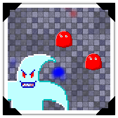

I make video games! Here are the ones I've released so far.
 |
ICCC (LD30)Made in 72 hours for Ludum Dare 30. Work for the (I)nternational (C)ommunication (C)onstruction and (C)onsulting! Use communication to spread your political agenda by connecting the world with the internet and shoving your message down the pipe! Beware of your demanding company, bankruptcy, and easy to piss off locals! |
Evolution is the Key (LD24)Made in 72 hours for Ludum Dare 24. You are trapped in a maze that constantly evolves around you. Made in Java with LWJGL. Use WASD to move, MOUSE to look, and the LEFT MOUSE BUTTON to fire your weapon. Scored #2 in Theme, #3 in Innovation. |
 |
 |
Get Away From My Cake!Small game about defending cake-eating zombies from your delicious birthday cake. Use cursor keys to move, space to shoot. Incomplete but completely playable. Made in Java. Sound not functioning because the native Java sound API isn't that good. |
SDL SnakeIt's snake! Made in C! Using SDL! Programmed in one weekend in May 2013. Windows download requires the Visual C++ 2012 Redistributable which can be found here. Can be compiled for Linux and Mac; tested under Wine 1.7.25. |
 |
 |
GM Minesweeper (Easy)I like Minesweeper so I tried to make my own. I only implemented the easy difficulty. Made using Game Maker; released April 2009 on the YoYo Games Sandbox for Windows. Works with Wine 1.7.25. |
Portal GM: Pre-SlicePortal is my favourite video game so I tried to make a 2D version. There's no sound because I didn't know about SFXR back then. Made with GameMaker. Previously hosted on the YoYo Games Sandbox. Released May 2008. Only compiled for Windows, but works under Wine 1.7.25. |
 |
 |
SnakeManThe result of combining certain elements of Snake and Pacman into one game. Made with GameMaker; released February 2008 on the YoYo Games Sandbox for Windows. Only compiled for Windows, but works under Wine 1.7.25. |
I make utilities and libraries to fill my needs; here are a bunch that I've coded.
 |
Atom PluginsI use Atom, the text editor, a lot so I've made a couple plugins for it. language-batch provides syntax highlighting for Windows Batch files. love-launcher launches a LÖVE process for the current project. |
SDL2_bmfontA BMFont extension for SDL2. BMFont is a way of generating bitmap fonts from fonts installed on the operating system. The extension is fairly limited because my knowledge of UTF8 usage is limited. Coded in C. |
|
|
Vampyr UtilsUtilities for decoding various files used by Vampyr: The Talisman of Invocation. Coded in Java. I used these utilities to decode the image and map files which I then put into albums; I've provided links below. |
Diamond GeneratorA GUI tool for turning images into diamonds. Coded in Java. |
|
In my spare time I transcribe pieces of music; here are my works so far.
| Title | Artist | From | Video | MIDI | |
|---|---|---|---|---|---|
| Das Wandern | Kajiura Yuki | .hack//SIGN | Video | MIDI | |
| The Bones of Jakobson | Jessica Curry | Dear Esther | Video | MIDI | |
| Dear Esther | Jessica Curry | Dear Esther | Video | MIDI | |
| I Have Begun My Ascent | Jessica Curry | Dear Esther | Video | MIDI | |
| Golden Ratio | Jessica Curry | Dear Esther | Video | MIDI | |
| Remember | Jessica Curry | Dear Esther | Video | MIDI | |
| Standing Stones | Jessica Curry | Dear Esther | Video | MIDI | |
| This Godforsaken Aerial | Jessica Curry | Dear Esther | Video | MIDI | |
| Twenty One | Jessica Curry | Dear Esther | Video | MIDI | |
| The Earth Prelude | Ludovico Einaudi | Divinire | Video | MIDI | |
| The Event | Jessica Curry | Korsakovia | Video | MIDI | |
| Wet Hands | C418 | Minecraft | Video | MIDI | |
| 3EM08_SS_103_junko | Sagisu Shiro | Rebuild of Evangelion | Video | MIDI | |
| 3EM12_SS_101_2femmes_option | Sagisu Shiro | Rebuild of Evangelion | Video | MIDI |
The more tools you have at you're disposal the easier making video games becomes. Here are a bunch of resources that I've found useful over the years.
Engines
- jMonkeyEngine: Great 3D engine for Java for publishing to desktop systems; handles loading and presenting of assets, handling most of the dirty work for you. Provides many shaders including normal mapping, water rendering, and god rays.
- LÖVE: Great 2D engine for Lua for publishing to desktop systems; provides APIs for everything you would need in a 2D game (physics, sound, graphics, etc)
- GameMaker: Good beginner game maker tool; can deploy to a variety of operating systems (with paid upgrades); features both a drag-and-drop interface paired with it's own scripting language
Libraries
- Lightweight Java Game Library (LWJGL): OpenGL for Java; also provides OpenAL bindings; this provides you access to the raw OpenGL calls from Java; if you're looking for something that does most of the heavy-lifting for you look elsewhere (like jMonkeyEngine)
- SDL: C library for audio, input handling, and 2D graphics; also provides OpenGL capabilities
Programs and Services
3D Modelling
- Blender: powerful 3D modelling software
- free and open source
- Windows/Mac OS X/Linux
- very powerful but has a very, very, very steep learning curve
- can export as variety of formats
Art
- GNU Image Manipulation Program (GIMP): all-purpose program for graphics creation and editing
- free and open source
- Windows/Mac OS X/Linux
- advanced and powerful but not impossible to learn
- great for textures, bitmap art, pixel art
- Inkscape: tool for the creation of scalable vector graphics
- free and open source
- Windows/Mac OS X/Linux
- great for scalable vector graphics (SVG), diagrams
Level Creation
- Tiled: all-purpose level editor
- free and open source
- Windows/Mac OS X/Linux
- emphasis on tile map editor although allows arbitrary placement of objects on respective layers
- saves as XML, exports to other formats (can even write your own exporter!)
Music
- FamiTracker: program for creating NES music
- free and open source
- Windows only; works in Linux with Wine
- results sounds very 8-bit/chiptune
- can export as WAV
- interface is track oriented; displays note names instead of staff
- Incompetech: site with a bunch of great, royalty-free music
- very professional souding music
- all royalty-free (licensed under Creative Commons: By Attribution 3.0)
- can pay for no-attribution license
- MuseScore: music notation software
- free and open source
- Windows/Mac OS X/ Linux
- more meant for music notation but results can be exported to MIDI
- staff-based; intimidating for those with no background in music theory
Sound
- SFXR: generates sounds reminiscent of the SNES
- free and open source
- cross-platform (if you include ports)
- the intent was to generate more place-holder sounds, but the SNES characteristic sounds may be suitable for certain projects
Text Editors
- Atom: highly customizable text editor inspired by Sublime Text
- free and open source
- Windows/Mac OS X/Linux
- feels more like an IDE but can be used as a basic text editor
- customizable through plugins written in CoffeeScript
- has a central repository for sharing plugins, which is built into the program
- my personal preference
- Notepad++: fast and reliable advanced text editor for Windows
- free and open source
- Windows only; works with Wine
- the best text editor I've come across for Windows
- Sublime Text: great text editor
- proprietary; both registered (paid) and unregistered (free but with nag to pay) versions
- Windows/Mac OS X/Linux
- very small, slick, sexy, and fast
- extendible through Python plugins
I can be found on a variety of social platforms, like the following:
Blog • Twitter • GitHub • Google+ • SoundCloud • YouTube • Email